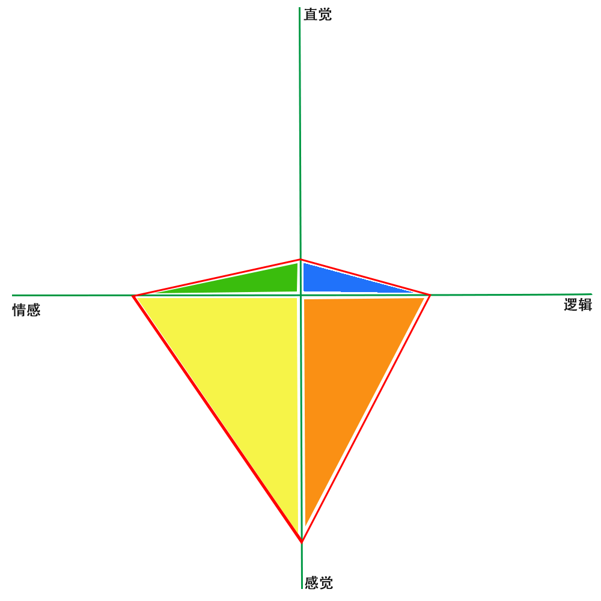

偏好测试
偏好没有好与坏，对与错。是你的天性使然。
做以下测试前，请你放松，从内心出发，发出最原始、最忠于自己的声音。
不要思考太多，追求完美，用你的第一印象选出你偏好A还是B。
1 决策偏好
- A：和谐本身很重要？ B：和谐是达到目的的手段？
- A：因为“感觉对”而采取行动？ B：因为“合乎逻辑”而采取行动？
- A：优先考虑人？ B：优先考虑事？
- A：以保持和谐关系为重？ B：以遵守正确路线为重？
- A：通过达成共识决策？ B：根据自己的想法决策？
- A：首先相信自己的感觉？ B：首先相信自己的理智？
- A：无法忍受冲突对立？ B：能够忍受冲突对立？
2 获取信息偏好
- A：依靠个人内在觉知？ B：依靠个人观察？
- A：更多地考虑“可能会是什么”？B：更多地考虑“是什么”？
- A：偏好创造？ B：偏好常识？
- A：依据灵感采取行动？ B：依据谨慎分析采取行动？
- A：喜欢研究概念？ B：喜欢研究事实和数据？
- A: 注重全局观点？ B：注重细节？
- A：喜欢有价值的想法？B：喜欢既定事实？
3 测试结果
3.1 橙色－执行
- 李建： 1-3A4B 2-2A5B
- 张芳旭： 1-3A4B 2-2A5B
- 牟广峰： 1-2A5B 2-2A5B
- 曲亚童： 1-2A5B 2-2A5B
- 张楠： 1-2A5B 2-2A5B
- 高振泽： 1-2A5B 2-2A5B
3.2 黄色－包融
- 贾轩： 1-5A2B 2-2A5B
- 胡大民： 1-4A3B 2-1A6B
3.3 绿色－分享
4 一些思考
- 对角线的蓝色，团队里面没有。是不是因为对角线互斥的原因，管理者不太喜欢招募对角线颜色的同学进入团队？
- 需要破局的话，需要引入蓝色的力量？
- 团队中橙色成员的大多数，表明中坚力量还是充足的。
5 针对测试结果的个人发展计划
5.1 我的颜色标签分布

5.2 个人发展计划
修圆的计划
比较缺蓝色和绿色的方面
先发展蓝色方面，再发展绿色方面
创新、创意、蓝图、有远见、果敢、有梦想、有格局、目标
价值观、分享
拥抱变化
- 制定团队中长期规划，一个月内
- 拥抱创新，拓展视野，通过学习和交流，持续进行